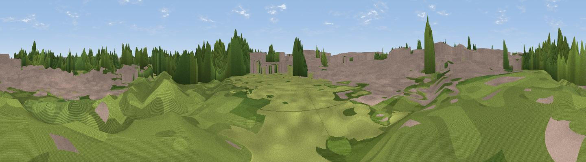

Viewing platform
#45693 in England · top 86% of its area beats it · near TootingWhere it is
The exact computed spot (TQ 26301 71122). Click the marker for map links.
The view, rendered

A 360° render of this exact spot computed from the terrain model, tree cover and land cover — summer colours, afternoon light, calibrated against photographs of famous viewpoints. Real trees, hedges and buildings will differ in detail.
The panorama
Grey silhouette: terrain skyline in each direction (720 bearings, Earth curvature and refraction included). Dashed green: skyline with trees (+15 m) and buildings (+8 m) as obstacles. Blue strip: how far the ground is visible on each bearing.
Where the view opens
Wedge length = distance to the farthest visible ground on that bearing (vegetation-aware). Rings at 10, 25 and 50 km.
What fills the view
41% built-up · 41% woodland · 17% grassland
Angular shares of the visible panorama (visual magnitude), not map area. Landscape diversity 0.45 (0–1 Shannon).
Key numbers
More beautiful places nearby
The staircase of upgrades: each row has a higher view potential than everything closer. Driving times are estimates from straight-line distance, calibrated against real road routing — check an actual route before setting out.
| Place | Direction | Drive | Score |
|---|---|---|---|
| Viewpoint near Wimbledon | NW · 2 km | ~5 min | 19.9 |
| Putney Heath | WNW · 4 km | ~9 min | 27.9 |
| Viewpoint near Beddington Corner | ESE · 5 km | ~10 min | 31.5 |
| Viewpoint near Sydenham | ESE · 7 km | ~15 min | 37.4 |
| Viewpoint near Richmond | WNW · 8 km | ~16 min | 38.3 |
| Viewpoint near Richmond | WNW · 8 km | ~16 min | 43.7 |
| Viewpoint near Sydenham | ENE · 9 km | ~18 min | 48.5 |
| Viewpoint near Catford | ENE · 10 km | ~19 min | 51.4 |
51.42504, -0.18479 · source: osm viewpoint · position refined by local search. Computed location — check access rights before visiting.